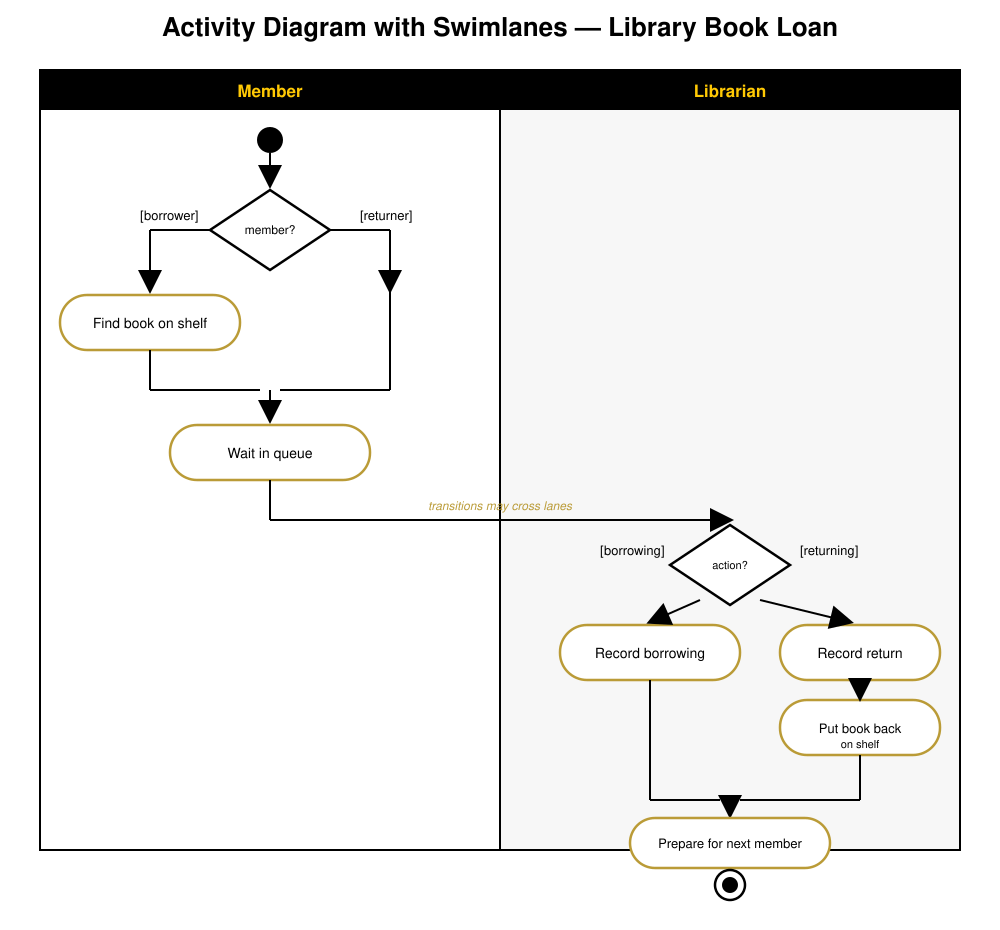

Modeling Software Projects¶
Project-Management Tools & the UML¶
COP 4331 - University of Central Florida
Based on material by Drs. Richard Leinecker and John Aedo
Note:
Lecture 2 of 2. First half: the non-UML tools we use to plan and track a project (Gantt charts, Kanban boards, Jira/GitHub Issues). Second half: the UML diagrams we use to model the application itself (use case, class, sequence, activity).
Why We Model At All¶
Before you model the application, you have to model the project. Two different problems, two different sets of diagrams:
- Modeling the work - Gantt charts, Kanban boards, burndown charts: when things happen and who is doing them
- Modeling the application - UML: what the system does and how its parts fit together
Both are about the same thing at heart: creating a shared, visual understanding that a team can agree on before committing to code.
Part 1: Non-UML Tools for Managing the Work¶
Gantt Charts¶
A Gantt chart is one of the most popular ways to show activities (tasks or events) displayed against time.
- The left side lists the activities
- The top is a time scale
- Each activity is a bar - its position, length, and end reflect the start date, duration, and end date
At a glance you can see what’s active, what’s upcoming, how long each task will last, and whether tasks overlap.
{kind=link}
Reading a Gantt Chart¶
When you look at a Gantt chart, you’re really asking:
- What tasks are being worked on now, and what’s upcoming?
- When is each task due, and what dependencies does it have?
- Who is doing each task?
- Is the project late, on time, or ahead of schedule?
Common tools: GanttPro.com, TeamGantt, Excel, LucidChart.io (which can even import a board from Trello)
Kanban Boards & Trello¶
A Kanban board is the digital equivalent of laying sticky notes out on the floor - it’s cloud-based, so it can be accessed anywhere, and it’s just as useful for a group presentation or a research project as it is for a corporate team.
- Board - the project or goal itself
- List - a stage in your workflow (typically “To Do,” “Doing,” “Done”)
- Card - an actual task that needs to get done
{kind=link}
Trello in Practice¶
Cards carry more than just a title:
- Due dates - Trello notifies you by email as a deadline nears
- Checklists - track progress within a single card
- Color labels - filter down to a specific type of task
- Attachments - documents and links for easy reference
- Interoperability - connects with other apps (e.g., Evernote)
On a collaborative board, teammates get notified when a card they’re assigned to is due; you can also subscribe to a card to get updates without being personally assigned.
Beyond Trello: More PM & Issue Tools¶
| Tool | Best known for |
|---|---|
| GitKraken / GitKraken Boards | Git GUI with an integrated Kanban board |
| Jira | Sprint boards and reporting, built for Agile teams |
| GitHub Issues | Lightweight issue tracking tied directly to your repo |
Jira in particular is built around the Agile sprint model - its sprint board looks like a Kanban board, but its reporting is where it earns its reputation.
Burndown Charts¶
A burndown chart is Agile’s answer to “are we on track?” It plots remaining work against time remaining in the sprint.
- The ideal line trends straight down to zero by the sprint’s end
- The actual line shows real progress - above the ideal line means the team is behind, below means ahead
- Unlike a Gantt chart (which shows a schedule), a burndown chart shows velocity
Part 2: Modeling the Application - the UML¶
Why Model Your Applications?¶
- Creating models solidifies design goals before a line of code is written
- Models provide design agreement among development teams
- A visual model bridges the gap between stakeholders who think about the system very differently - and gives everyone a common understanding
Non-UML diagrams still matter in this course too: Entity-Relation Diagrams, Gantt charts, and (for Agile teams) burndown charts.
The UML Family¶
UML (Unified Modeling Language) isn’t one diagram - it’s a whole family. This course focuses on four:
- Use Case Diagram - what the system does, from the outside
- Class Diagram - the static structure of the system’s data and behavior
- Sequence Diagram - how objects collaborate, over time, to accomplish one task
- Activity Diagram - the workflow / control flow of a process
You’ll also encounter State Machine, Object, Component, Deployment, Package, Timing, Communication, Composite Structure, and Profile diagrams elsewhere - but these four cover the vast majority of day-to-day modeling.
Use Case Diagrams: The Big Picture¶
- A Use Case Diagram gives a high-level snapshot of an application
- Complex applications need multiple use case diagrams, often arranged hierarchically
- They’re usually the best starting point when communicating with a wide variety of stakeholders - you don’t need to be technical to read one
A use case diagram starts with a boundary - the edge of the system being modeled.
Actors & the Use Case Diagram¶
- Actors sit outside the boundary and are normally drawn as stick figures - but an actor doesn’t have to be human. A database or another system counts too.
- Use cases live inside the boundary, drawn as ellipses with a short verb-phrase description (e.g., “Withdraw Money”)
- A straight line connects an actor to every use case it participates in
{kind=link}
Use Case Relationships: Include & Extend¶
<<include>>- one use case always triggers another. Insert Card always leads into Enter PIN - they’re related by necessity.<<extend>>- models an edge case that only sometimes happens. Exceeded Try Count only occurs when PIN entry fails too many times.
Both relationships let you keep the base flow simple while still documenting the exceptions that real systems have to handle.
General Thoughts on UML¶
For an application to be of professional quality, it must:
- Meet the needs of the users
- Be robust
- Be maintainable
- Be documented
Many developers using rapid tools are tempted to skip modeling: write a prototype, then keep bolting on code until it’s “done.” The problem is that the result lacks a well-defined, scalable architecture - because it was never actually designed. That tends to compromise object-oriented principles and leaves you with code that’s inefficient and hard to maintain.
Refine and Reduce Risk¶
Using UML, a UML-aware tool, and a real development process shifts design work earlier - from the development phase into analysis and design.
- This reduces risk and gives you a way to test the architecture before coding begins
- The upfront overhead pays off: the system ends up user-driven and documented
- Many UML tools can even generate skeleton code that is efficient, object-oriented, and reusable
Class Diagrams: Notation Basics¶
A class is drawn as a box with three compartments: name, attributes, and methods. Every object created from the class shares this same structure and behavior.
{kind=link}
Visibility markers: + public − private # protected
Class Relationships: The Zoo System¶
Classes rarely stand alone - UML gives us five distinct line styles for how they relate:
- Association - a plain line connecting two independent classes (e.g., Zoo - employs - Zookeeper)
- Aggregation - hollow diamond, a “has-a” relationship where the part can outlive the whole
- Composition - filled diamond, an “owns” relationship where the part is destroyed with the whole
- Generalization / Inheritance - hollow triangle pointing to the parent, an “is-a” relationship
- Dependency - dashed arrow, “uses” - one class relies on another without owning it
{kind=link}
Note:
The “tortoise can leave the enclosure and still be a tortoise” line is a nice intuition-check for is-a vs has-a: identity survives the relationship for inheritance, but not necessarily for composition.
Sequence Diagrams: Purpose¶
A sequence diagram is one of UML’s interaction diagrams - it describes the dynamic, time-ordered behavior of a set of objects.
Its purposes:
- Model the interactions between objects that realize a single use case
- Verify that a use case can actually be supported by the classes you’ve designed
- Identify responsibilities/operations and assign them to the right class
- Emphasize the time ordering of messages - sequential flow, branching, iteration, even concurrency
Sequence Diagram Notation¶
- Lifelines - a dashed vertical line dropping from each actor/object, representing it existing over time
- Actors sit outside the diagram (usually on the far left) and, unlike objects, have no activation box
- Messages are horizontal arrows between lifelines:
- Solid arrow = a call
- Dashed arrow = a return
- Activation boxes (thin rectangles on a lifeline) show how long an object is actively doing work
altframes wrap around two or more mutually-exclusive branches
Building a Sequence Diagram: ATM Withdrawal¶
Start with the actor on the left, then add the objects it interacts with, left to right. Add lifelines, then walk the messages downward in time order.
{kind=link}
Note
Walk this top-to-bottom live: insert card → verify with the bank → alt: valid/invalid → enter and verify PIN → alt: sufficient/insufficient funds → dispense cash → eject card. Point out that “requestPIN” is not a return message (solid, not dashed) even though it flows back toward the customer.
Alt Frames: Modeling Branches¶
Notice two things in the ATM diagram:
- A dashed return arrow (
4: valid,12: ok) means “I finished the call and I’m handing control back” - it is not the same as a new call - An
altframe offers two (or more) mutually exclusive paths - only one branch actually executes at runtime, and the diagram documents both so nothing is a surprise later
This is exactly the kind of edge case that a use case diagram’s <<extend>> hinted at - the sequence diagram is where you work out the detail of that edge case.
Activity Diagrams: Purpose¶
An activity diagram is essentially a flowchart for modeling the dynamic aspects of a system - usually a business workflow or an operation.
It’s especially useful when an operation has to accomplish several things and you need to understand the dependencies between them - what can happen in parallel, and what has to finish before something else can start - before you decide on an exact order.
Activity Diagram Notation¶
{kind=link}
- Action states are atomic - they can’t be broken down further and can’t be interrupted
- Activity states can be decomposed into their own activity diagram, and can be interrupted
- A branch has one incoming transition and two or more outgoing ones, each guarded by a Boolean condition like
[x>0] - A fork starts parallel/concurrent flows; a join waits for every incoming flow before continuing
Swimlanes: Assigning Responsibility¶
A swimlane partitions the activities on a diagram into groups, where each group represents the person, role, or department responsible for those activities.
- Each swimlane has a name that’s unique within the diagram
- Every activity belongs to exactly one swimlane
- But transitions can cross lanes - that’s exactly how work gets handed off between people
Activity Diagram Example: Library Book Loan¶

A member either borrows or returns a book; once they reach the front of the queue, responsibility crosses the swimlane boundary to the librarian, who records the transaction and prepares for the next member.
{kind=link}
Choosing the Right Diagram¶
| Diagram | Answers the question… |
|---|---|
| Gantt chart | When does each task happen, and are we on schedule? |
| Kanban board | What state is each task in right now? |
| Use Case Diagram | What can the system do, from the outside? |
| Class Diagram | What are the system’s “nouns,” and how do they relate? |
| Sequence Diagram | In what order do objects talk to each other to get one thing done? |
| Activity Diagram | What’s the workflow, including branches and parallel work? |
Key Takeaways¶
- Project tools (Gantt, Kanban, Jira/GitHub Issues, burndown charts) model the work; UML models the application
- Use case diagrams start with a boundary; actors stay outside it, use cases live inside it
- Class diagrams capture structure through five relationship types: association, aggregation, composition, generalization, and dependency
- Sequence diagrams show time-ordered collaboration between objects, with
altframes for branches - Activity diagrams are flowcharts for workflows, with swimlanes showing who’s responsible for what
- Modeling before coding shifts risk earlier, where it’s cheaper to fix
Coming up: we’ll put these diagrams to work designing your own course project.
Created : September 14, 2026